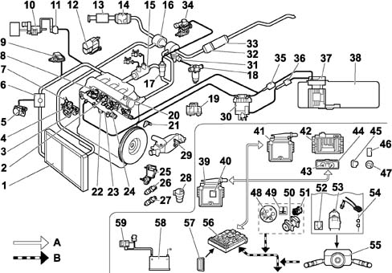

VIEW OF ASSEMBLY
- Path
- Descriptions > 10 ENGINE > 1060 DIESEL INJECTION SYSTEM > VIEW OF ASSEMBLY
- Kind
- system description
- Applies to
- engines: 2.0 16V JTD, 2.2 16V JTD; all production periods
- Interactive page
- https://sloeber94.github.io/elrnDB-fUlss/en/#/179006604
Applies to: engines: 2.0 16V JTD, 2.2 16V JTD; all production periods

A, VAN
B, CAN
1, Air/air heat exchanger (intercooler) | 31, Vane diffuser control actuator |
2, Fuel temperature sensor - 1221 | 32, Catalytic converter |
3, Fuel pressure regulator - 1322 | 33, FAP Anti-particle filter |
4, Fuel pressure pump | 34, EGR modulating solenoid valve - 1253 |
5, Throttle valve (EGR) - 1263 | 35, Fuel cooling device |
6, EGR valve casing | 36, Fuel heating device - 1276 |
7, Fuel pressure pump 3rd piston deactivating soleniod valve - 1277 | 37, Fuel pump - 1211 |
8, Diesel injectors - 1331 – 1332 – 1333 – 1334 | 38, Fuel tank |
9, Intake air pressure sensor - 1312 | 39, Engine Management node NCM - 1320 |
10, Swirl actuator | 40, Atmospheric pressure sensor (integrated in the NCM) - 1320 |
11, Swirl modulating solenoid valve - 1264 | 41, Brake node - 7800 |
12, Intake air additional heater (electric or boiler) - 8098 - 1190 | 42, Automatic Transmission Node - 1630 |
13, Air filter | 43, Electronic rev counter - 4210 |
14, Flow meter / air temperature sensor - 1310 | 44, On-board computer (*) |
15, Exhaust gas/water heat exchanger | 45, Pre-heating warning light - V1150 |
16, Variable geometry turbocharger | 46, Additional heater control switch - BCP3 |
17, Exhaust gas recirculation valve (EGR) | 47, Diagnostic warning light - V1300 |
18, Turbocharger modulating solenoid valve - 1233 | 48, Engine coolant temperature sender unit sensor - 4026 |
19, Pre-heating controlunit - 115020, Timing sensor - 1115 | 49, Engine coolant temperature warning light - V4020 |
20, Timing sensor - 1115 | 50, Cooling compressor - 8020 |
21, Engine speed sensor - 1313 | 51, Fan - 1510 |
22, Fuel high pressure sensor - 1321 | 52, Speed regulation switch - 7300 |
23, Common rail | 53, Speed governor switch - 7305 |
24, Heater plugs - 1160 | 54, Redundant brake switch - 7308 |
25, Accelerator pedal position sensor - 1261 | 55, Steering column switch unit node - CV00 |
26, Clutch pedal switch - 7306 | 56, Body Computer Node - BSI |
27, Accelerator pedal switch - 2100 | 57, Diagnostic socket - C001 |
28, Vehicle speed sensor - 1620 | 58, Battery - B001 |
29, Engine coolant temperature sensor - 1220 | 59, Twin relay - 1304 |
30, Fuel filter |
DESCRIPTION
The BOSCH EDC 15C2 injection system basically comprises:
- a high pressure pump complete with pressure regulator, operated by the engine;
- a distribution manifold, shared by all the cylinders, known as common rail, continuously supplied by the high pressure pump, with a damping function for the fluctuations in pressure and a high pressure fuel reserve;
- fuel injectors, connected to the common rail by means of pipes.
- an NCM electronic control unit which, depending on the engine parameters, manages the pressure in the common rail, the pump capacity and the opening time and timing for each injector.
The specifications of the system make it possible to improve:
Consumption (a saving of up to 15% in consumption compared with indirect injection engines).
By means of:
- the adoption of 4 valves per cylinder which improve the formatin of the mixture;
- the central and vertical installtion of the injectors;
- optimum intake and exhaust manifolds;
- adoption of roller pawls that limit dispersion through friction.
Torque and power
By means of:
- the possibility of selecting the injection pressure, according to the operating conditions;
- higher injection pressure;
- supercharging through a variable geometry turbocharger (TGV).
Emissions
By means of:
- strong pressure to produce fine atomization and therefore combustion that is as complete as possible;
- improvement of the combustion chamber to utilize the maximum amount of air;
- a reduction in NOx emissions by recycling the exhaust gases;
- the use of a catalytic converter, for the reduction of CO, HC and particles;
- a complex shape double air intake duct system (variable swirl, in the head) for reducing particles;
- the use of a filter that reduces FAP particle emissions by 95%.
FEATURES OF THE SYSTEM
The system also features the following:
- the injection pressure is managed and regulated, within certain limits, by the NCM independently of the engine speed;
- the start and duration of the injection can vary depending on the operating conditions.
Different injection can take place for each injector during an engine cycle:
- a pilot or pre-injection injection (noise reduction);
- a main injection;
- a post-injection (for FAP regeneration).
OPERATION
The operating principle of the system is similar to that of a petrol injection system.
The electrical signals coming from the sensors that measure the service conditions are processed by the NCM which handles the information on the basis of precise adjustment algorithms and issues electrical signals to the actuators.
The NCM permanently checks:
- the flow rate of the fuel to be injected, calculated extremely accurately on the basis of the driving conditions and engine operating states.
- the injector opening time and consequently their operating time;
- the pressure of the fuel in the common rail modulating the pressure according to the operating conditions.
- recirculation of the fumes that escape (EGR);
- supercharging pressure;
- operation of the anti-particle filter FAP;
- management of the fault signals, autodiagnosis and communication with other management nodes, by means of the CAN and VAN.
The NCM uses the following information for the management of the engine:
- engine speed (engine speed sensor);
- accelerator pedal position (accelerator pedal potentiometer);
- intake air temperature and flow rate (flow meter);
- diesel pressure in the common rail (diesel high pressure sensor);
- engine coolant temperature (engine coolant temperature sensor);
- vehicle speed (vehicle speed sensor);
- air pressure (supercharging air pressure sensor);
- high pressure circuit diesel temperature (diesel temperature sensor).
Whilst operating in low load conditions, in order to reduce the power absorbed for driving the pump, as soon as a large capacity is no longer necessary, the NCM deactivates one of the three pumping elements by means of an electrical device.
BRAKE PEDAL SWITCH
The brake switch signal allows the NCM to ensure:
- better idle adjustment,
- fault diagnosis of the accelerator pedal potentiometer, through the principle of consistency,
- deactivation of the vehicle speed regulation for safety reasons.
The brake pedal switch is located on the actual pedal.
REDUNDANT BRAKE PEDAL SWITCH
The signal for the redundant brake pedal switch makes it possible for the NCM to check the consistency of the main switch.
The information coming from the brake pedal switches is constantly compared to detect any faults.
These two switches are in opposite states.
The redundant brake pedal switch is located on the actual pedal.
CLUTCH PEDAL SWITCH
The signal for the clutch pedal switch, fitted on the pedal assembly, allows the NCM to guarantee operation at the idle speed.
SAFETY RECOMMENDATIONS
Taking the extremely high pressure in the fuel high pressure circuit into account (between 200 and 1350 bar), it is COMPULSORY to follow these recommendations:
- no smoking in the immediate vicinity of the high pressure circuit during repairs.
- avoid working near flames or sparks.
With the engine running:
- do not work on the high pressure fuel circuit.
- always remain outside of the range of any fuel jet that could cause serious injury.
- never place your hands near a leak in the high pressure fuel circuit.
Wait for 30 seconds after the engine has been switched off before carrying out any sort of operation.
It is advisable to wear protective goggles and gloves for any type of operation.